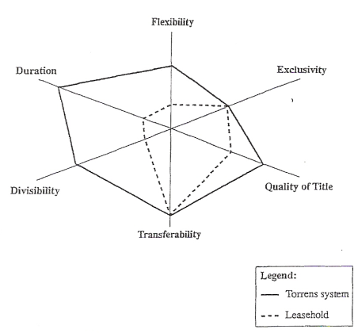

by
R W M Johnson, Ministry of Agriculture, Wellington
This paper explores the application of property rights to sustainable land management objectives. Property rights are briefly defined and discussed in terms of the Torrens system of land registration. Incentive schemes for soil conservation are assessed against the property rights background. Alternative systems of property rights are discussed after the manner of Bromley and Hodge. The application of such a changed system of property rights is assessed for practicality and technical achievement.
The traditional system for achieving changes in farm management practice in terms of soil conservation objectives in Australia and New Zealand has been to offer a system of incentive payments to land holders targeted on needed conservation objectives. These incentives recognised the strong bargaining position of the landholders both politically and legally. Their political power stemmed form their dominance in the early legislatures while their legal power stemmed from the system of land registration first introduced by Torrens in South Australia. The thrust of the argument to be presented here is that the Torrens system was too successful in achieving its primary objective of title security and lacked the flexibility to be adaptable to needed changes in practice when these became necessary in the pursuit of the national good.
This paper first discusses the nature of property rights with specific reference to land holding and defines what is regarded as an efficient set of property rights. The characteristics of property rights are compared for freehold and leasehold tenure. Reference is made to how water and mineral rights relate to these attributes. The paper then goes on to examine Bromley and Hodge's proposition that a re-distribution of land property rights would be an alternative method of reaching current perceived land management standards at considerably less cost to the exchequer. We conclude by assessing how practical their proposition is and whether it is technically achievable.
Property rights are a set of behavioural rules that people choose to observe and accomodate to. Dragun (1990) refers to "the social pattern of rights and duties". They can be established through custom, convention or law (Hide, 1987). The essential fact is that they are observed rather than sanctified by law. In general, they can be established through custom, convention, or law. In land use such rules specify who may use a resource and how the resource may be used. Such rules allow exchange to take place with some security and therefore assist in allocating resources among competing interests. The market works precisely because it is backed up by a set of property rights.
Exchange of property rights is based on their exclusivity and transferability. An exclusive property right is the ownership of a car; a common property right is the right to use the roads. One is exclusive and transferable and one is not. The right to exclude, says Hide, is a pre-condition to the right to trade. An exchange permits a value to be established hence we can talk about a market for property rights. Exclusive property rights must be specified and policed, and contracts for the exchange of rights must be negotiated and enforced. (Cars have ownership papers and the courts enforce owners rights when they are violated) .
There are at least six characteristics of property rights that qualify their usefulness in economic exchanges (Scott, 1989).
Figure 1 shows a diagrammatic representation of these six characteristics of interest in rights which are based on the following descriptors:
Duration: length of time an arrangement holds for; a period in which a rightholder can profitably invest in harvesting (Scott).
Flexibility: discretion to change use; what can and cannot be done without consulting others.
Exclusivity: the strength of a right; the inverse of the number of persons who must be contacted to internalise enterprises like fishing (Scott); freedom from disturbance; strength of acceptance by the community.
Quality of Title: legal protection and security provided by common law and things like registration systems; acceptance by others.
Transferability: ability to transfer to others; number of parties to whom a transfer can be made (Scott).
Divisibility/Assemblability: ability to sub-divide; ability to aggregate; ability to share; ability to have joint holders (Scott); abiliy to assist transferability (Scott).
Scott then says the amount of each characteristic in a standard interest can usefully be regarded as observable, measurable and continuously variable. For example, each may be scored from a 100. This relates to other writers who h3ve used value-laden terms such as "incomplete", "imperfect", "attenuated", or "propertyness". Furthermore, these characteristics can be regarded as a six-pointed star-shaped figure formed by joining its measured points on the six characteristics axes. This is what is shown in Figure 1.
Figure 1: Six Characteristics of Interest in Real Property (after Scott, 1988)
| Comparision of Tenure Systems: | ||
|---|---|---|
| Characteristic | Torrens System | Leasehold |
| (Scores on a scale 0 - 100) | ||
| Duration | 100 | 20 |
| Divisibility | 80 | 20 |
| Transferability | 100 | 100 |
| Quality | 100 | 80 |
| Exclusivity | 50 | 50 |
| Flexibility | 80 | 20 |
It is possible to use such a diagram to compare two systems of property rights. In Figure 1, a freehold system of land tenure is compared with a leasehold system. The right to occupy land is well understood in Australia and New Zealand. Fairly arbitrary scoring on the 0 - 100 scale has been used for this example. But in general freehold systems of land tenure are very high on most attributes other than exclusivity (there is not a lot of protection from the actions of others) while leasehold tenure scores weakly except on transferability and quality of title. The resulting linkages between characteristics in the diagram thus form "pictures" of different property right systems.
An alternative formulation to Scott's characteristics is described by the concept of attenuation (Quiggin, 1986) as indicated above. Any limitation on the way in which property rights may be used constitutes attenuation. The ideal, unattenuated state is approximated by private chattel ownership where the owner has completely free rights of use, exclusion and alienation. The attenuation of property rights, in this view, will always reduce their value to the owner, and is sometimes viewed as undesirable (ie by the followers of Coase). This is particularly true when attenuation is the result of actions of governments, such as regulatory limits on the way in which property may be used or restrictions on the sale and purchase of property. Dragun points out that the key features of non-attenuation are complete specification of the right, exclusive specification, full transferability and enforceability (Dragun, 1990). Jacobsen (1991) points out that the ownership conferred by property rights does not normally entail the right to impose costs on others. Rights are attenuated to prevent adverse consequences to others, and in turn protect owners from the actions of others. For further discussion of the philosophical origins of these terms see Alchian and Demsetz (1973), Castle (1978), Quiggin (1986), Izac (1986), Cox, Lowe and Winter (1988), and Dragun (1990) among others.
An efficient set of property rights refers to minimising the costs of making changes to right holdings, the costs of policing and the costs of establishment (eg registration). Hide (1987) gives an analysis of transaction costs and their relation to efficiency. The Torrens system of land registration is a very efficient set of property rights because it provides high security at low registration cost, it requires low policing costs and changes can be made with very little trouble. Most New Zealanders and Australians do not realise that the registration of title to their dwelling site confers such a wide set of benefits on them personally. For this we can thank our forefathers! Such things as planning tribunals and legal niceties raise the costs of many exchanges of property rights and hence can be seen as counters to efficiency. Poor design in legislation could be one reason for this. Thus an efficient set of property rights is a well designed set, widely trusted by the people involved and not subject to vexatious litigation. Conflict does arise, however, and the courts may be the only way to resolve difficulties between conflicting interests.
There is some conflict in the literature with this definition of efficiency. Bradsen (1988) discusses at some length the merits of cost-benefit analysis particularly the use of social discount rates. He allows that such analysis is needed for major works; but says preventative practices should be treated differently. He does not distinguish between project costs and transaction costs and hence never really defines what we would call an efficient solution. Jacobsen (1991) discusses social cost-benefit analyses incorporating the depreciation of natural capital as a cost. Subsequent discussion indicates that this author is including transaction costs, "high costs of public ownership" for example, without distinguishing the different context.
Australia and New Zealand have well-developed and efficient sets of land property rights. The system is so well designed that it provides full security at low cost, has low policing costs and provides a high degree of protection. The system is so well thought of that a market for land operates without any doubt as to the authenticity of the title or the potential risks.
The right of ownership then confers on the owner further rights as to how he might use that right. He may prevent trespass, he can choose any land use he likes, he can erect a building and he can sell any product from that land without encumbrance. (We use "use" in the town planning sense rather than a farming sense). Titles can have attachments to them such as the registration of debt secured against that title. In Western Australia, notices to occupiers of land from the commissioner of soil conservation can be registered with the appropriate land registrar (Looney, 1991). Attachments lower the exchange value of a right.
In general, freehold or full tenure confers more security on the titleholder than a leasehold system (this clearly relates to our forefathers' experience in England, Scotland and Ireland). Figure 1 explains this difference from the point of view of the various characteristics of interest in a right. Kirby and Blyth (1987) are very critical of the problems caused by leasehold systems of tenure in Australia.
The rights of use have become constrained by social controls in a number-of instances . Town and Country Planning Acts and Mineral legislation, for example, constrain access, building rights, and subdivision typically. They do not constrain the selling of the product, however, though cases of this do occur (see indigenous forest discussion below for example).
In the historical context, these property rights facilitated the opening up of the land. They provided an incentive to develop and enabled the developer to capture all the gains from his occupation. They also secured him a reward when he had finished developing as the right was immediately transferable to others at a market determined price backed by the very system of which it was part.
In the longer run, it was inevitable that some of the (social) costs of development of the land were not captured in the market process. In particular, deterioration in surface cover, soil loss, sediment transmission, salinity levels, and water quality loss can still occur within the Torrens system of property rights, which was otherwise so efficient in achieving its purposes. The conditions of use of the right allowed these things to happen and no sanctions were introduced to prevent them happening for a long period. The position was worse where leasehold land was concerned (Kirby and Blyth, 1987).
Salinity is a well-documented case of an externality arising out of seepage (Hodge, 1982; Quiggin, 1986; Kirby and Blyth, 1987). The debate ranges over the respective merits of negotiation, incentives, trading rights and regulation. There is also a clear line of argument connecting market failure with information deficiencies both at the landholder level and local government (Wills, 1987). wills also suggests that distortion is not absent from information supplied to government by interested parties. A good overview of the extent of land degradation in Australia, and of the legal structures in place, which I found useful, is given in Looney (1991).
When changes (in externalities) take place, the system ot property rights is no longer efficient and effacious. A new system of property rights is needed to reflect societal value which at the same time minimise transaction costs. In New Zealand the new Resource Management Act epitomises the new set of social values and indicates that both regulatory and market based measures may be used to reach the Act's objectives. Such legislation must be scrutinised very carefully from the property right point of view just because new solutions and the consequential legal provisions could potentially be very expensive or vexatious to introduce or bring about.
In our language the Torrens system does not deal well with externalities. The above examples are the long term impacts of the human use of land which affect others than the right holder. It can be stated that they occur as a result of the inability to negotiate and enforce an exchange of the relevant property rights (Hide). The inability arises because physical or technical factors prevent the parties getting together or they simply went unobserved. They are typically non-point sources of degradation.
In the-case of soil erosion on slopes, the downstream owner's rights are not protected; there is no market in "rights to cause soil loss" and transfer the costs; there is no point discharge on which to fix a levy; solutions up to the present have been based on incentives (bribes in the Bromley language) to degraders to stop or control the relevant practice. One solution is to bring the degraders and the recipients together in a common rating system and spread the costs of treatment; in this way the externality can be internalised!
Legislation like the Resource Management Act can be viewed as an exercise in the redistribution of property rights. Legislation can place restrictions of all sorts on the use of resources governed by property rights and hence can potentially change land use itself. For example, previously the Mining Act had prior rights over freehold rights with respect to prospecting for minerals. Developers could cross private land for this purpose. In the Resource Management Bill it was proposed that land owners could have a veto over such access. In the resulting Crown Minerals Act (the relevant sections were spun off the Resource Management Act) clauses 55 and 63 simply state the classes of land which will not be subject to an access arrangement after the appointment of an arbitrator. The strengthening of the rights of surface landholders has not taken place. From an efficiency point of view, a low cost system is needed to reduce the costs of undue negotiation and litigation where the national interest is involved.
The scope of such legislation is also governed by property rights. By scope, we mean all those persons and corporates who may be affected by the provisions. Control over resources means control over the users of resources. The users are already in occupation and have established formal and informal rights. The domain of such legislation is defined as being all property held under some system of rights whether it be freehold land (registered title) or some other right conferred by custom, agreement or contract.
Property rights are important in land precisely because they enable social control over resource use and management (Hide). Through reform and adaptation, the use and management of resources is improved. In adapting property rights, society adjusts the respective roles of the state and the individual and explores the ability of political and market mechanisms to manage the resource stock better.
Water rights are an example where social considerations often outweigh the desires of the individual. "First come" rights derived from prior access have given way to riparian doctrines that consider water a public resource held in trust by the Crown (OECD, 1987). Permits or licences are used to allocate the resource thus substituting administrative procedure and/or legal covenants for a market in single use rights. Current criticism is based on the imperfections of such administrative systems as they do not adequately provide for recreation, conservation and spiritual values, do not provide for other water uses, and do not provide an efficient set of rights, (Moore and Arthur-Worsop, 1989).
The new school maintains that a system of well-defined and tradeable property rights would be more socially advantageous than administered systems. They could provide greater flexibility and security, better information on resource values, minimal transaction costs and the ability to accommodate new resource values (Checcchio and Colby, 1988; Hide, 1987). Flexibility comes from being able to allocate water in accord with demand and changing use values. Security is gained by actual ownership of the right, as opposed to Crown ownership. The allocation process has the potential to be more transparent as resource values will emerge through bidding among alternative users. In a well-defined statutory environment information regarding transfer arrangements and possibilities are more transparent thus limiting uncertainty and ultimately transaction costs. These conclusions are consistent with the description of non-attenuated rights given earlier.
Administrative systems hide or disguise transaction costs. Public control apologists would no doubt say that the end justifies the means. But from an economic point of view achieving an efficient set of water property rights should be the target of public policy. A market for water rights creates opportunities for new uses to be recognised at relatively low cost. It would probably not provide for all recreation, conservation and spiritual values unless the respective lobbies were forced to "buy" their requirements. However, investigating, assessing and verifying all claims to a water source (not to mention appeals and legal proceedings) remains a high transaction cost process. Therefore legislative solutions in the water rights area must be particularly well-designed to achieve the potential efficiencies that are possible.
It has been pointed out that water markets will not perform perfectly (OECD, 1987, Ch 2). Market based allocations may not recognise the proper social accounting.(or shadow) prices. In a multiple resource use situation some uses will be difficult to identify and measure, and the mix of private and public goods will greatly complicate the design of an efficient property rights system. The presence of some public good aspects in the solution will always lead to some under-statement of demand. The OECD report (editors Bromley and Pearce) concludes that one system cannot be judged preferable to the other, and that member countries should choose their own policy objectives for water, resource management according to their own goals and objectives.
Under the Resource Management Act, New Zealand is moving to a system of transferable water permits. The responsibility for implementing them will fall on regional councils who will establish the regulatory and allocative framework for granting in-stream rights. Experience from South Australia has been quoted as indicating that with resource scarcity and effective regulations, water markets can achieve better water allocation (Moore and Arthur-Worsop). On the other hand, uncertainty over the tenure of water rights in Victoria and New South Wales has slowed up the development of markets in those areas (Verdich, 1986). Further analysis is obviously needed of these questions before we can be at all categoric about the relative efficiency of different allocation systems.
In this section we only discuss mineral rights as they bear on land access questions (for a general discussion of mining property rights in New Zealand, see Jardine and Scobie, 1990). Under New Zealand mining legislation the surface owner has a right of veto over access on certain classes of land only. These classes include land under some horticultural use, land in urban areas, land under burial grounds, airstrips, waterworks, roads, bridges or buildings, and all conservation land. The remainder is open to access (for exploration) without consent of the owner and makes up most of the pastoral farmland and exotic forest estate.
In the Resource Management Bill, it was proposed that land owners should have a veto over prospecting, exploration and mining on all land. In the past the mining rights had over-ridden the occupation rights. The proposed veto changed the distribution of property rights and hence the incentive to invest and develop. Such a veto would discriminate against the Crown as a mineral and petroleum owner. It would also reduce the incentive to explore for minerals and raise the transaction costs of getting access. This would reduce the efficiency of the set of property rights held by the explorers. It would transfer windfall gains from the old owners of rights to the new owners and could result in a lower rate of over-all development of the economy.
This is another case of the relative efficiency of two systems. From the point of view of the landholder he is interested in getting rid of (mining) rights that have priority over the ones he holds. From the point of view of the explorer, and indeed of the nation, the status quo was all about enabling society to have it both ways; one use of the land can continue to be developed while the potential to use it for something else is not foregone. Environmentalists had sided with the landholders in the debate as they wanted greater impediments to mining development as an absolute goal. In the event the status quo was preserved in the Crown Minerals Act and further testing and analysis of the relative merits of the two systems of property rights has been passed over.
This case is briefly discussed as it an example of regulations being used to control the use of the product derived from the possession of a right. In 1989, New Zealand introduced a set of regulations prohibiting the felling of indigenous trees for export purposes. The regulations were part of an attempt to conserve the native forest estate as well as trying to conform to advanced international standards of behaviour with respect to the felling of indigenous forests.
The ban on exports effectively used an administrative decree to limit the harvest of trees on privately held land. The regulations prevented landholders from felling timber for export purposes without compensation. Thus the surface owners interest in the land was made subservient to the public interest.
From the landholders point of view here was an arbitary decision to limit the sources of his income. It appeared there were cases where the exploitation of this resource was essential to the continued viability of the individual enterprise. Subsequent negotiations recogised this fact and a form of compensation was agreed to. The new government elected in 1990 has since put the forest regulations on hold.
From the environmental point of view it was regarded as imperative that New Zealand made an international gesture as early as possible.
From an efficiency point of view, the proposal was disadvantageous. The plan would have involve the preparation of a sustainable harvest plan approved by the Ministry of Forestry. The costs of this plan, especially if it involves survey costs, could make this option non-operable for many smaller freehold areas of forest. Some discussion was also based on the introduction of a felling fee to discourage use of the private forest estate. In all these cases the transaction costs of the conservation goal would have been high.
The Resource Management Act in New Zealand is effectively a change in the social paradigm that directs land and water resource use. The concept of sustainability lies at the centre of the Act's provisions. In the Act sustainability is defined as "managing the use, development, and protection of natural and physical resources in a way, or at a rate, which enables people and communities to provide for their social, economic and cultural wellbeing and for their health and safety while: a) sustaining the potential of natural and physical resources (excluding minerals) to meet the reasonably foreseeable needs of future generations; and b) safeguarding the life-supporting capacity of air, water, soil, and ecosystems; and c) avoiding; remedying, or mitigating any adverse effects of activities on the environment".
In New Zealand the Soil and Water Conservation Act was passed in 1941 and the Town and Country Planning Act in 1948. These Acts have gradually introduced definitions of what could be called "good" land and water use and provided mechanisms for national and local government to pursue such goals. The legislative provisions impose restriction on the holders of land rights and represent reductions (or attenuations) in the original property right granted to them, bought by them, or inherited by them.
In general, the cooperation of landholders (in soil conservation particularly) has been gained by a system of incentives for changes in management practices . As earlier mentioned, common law rights to water were abolished by the Water and Soil Act 1977 and control shifted to the State. Subdivision, changes in use (including buildings), and peri-urban development were all "licensed" under the town and country planning regulations. In the new Act, local government will be responsible for amending or continuing the ordinances which will have higher standards to meet than in the past. (The range of potential controls and administrative systems is very wide; further space will not be taken up with discussing them here). As Castle (1978) says, such legislation represents a dissatisfaction with the consequences of private holdings in land and a belief that a comprehensive approach holds the key to many resource and environmental problems. In the United States, the emphasis on the role of local and state government was consistent with a disenchantment with big, central government. Castle notes that federal pressure was required to make western states amend their water legislation as all the available water had already been privately appropriated.
Castle was concerned with the impact of macro policies for employment, prices and income. He found that the full cost of these policies will not be reflected at the national level but at the state and local government level. Macro policy impacts put pressure on the existing system of property rights. Local control mechanisms were slow to respond. Systems are needed to give a better combination of federal, state and local control and guidance to meet society's wider objectives.
This shift in the national paradigm is reflected a recent paper from Australia (Bradsen, 1990). In a paper on the effectiveness of soil conservation legislation, he reviews Australian definitions of sustainability in current legislation, and the relation of incentives, compulsion and regulation to ensure proper use of land. He concludes (he is a lawyer and landholder) that licensing is not generally an appropriate way to deal with land degradation; he believes obligations should first be imposed, not on landholders, but on government, especially if land conservation is administered by agencies whose ethos is historically rooted largely in exploitation (see Bradsen, 1988, for details). This obligation should involve ensuring that land is objectively assessed particularly to determine its capabilities, whether they are being exceeded, and what solutions are appropriate.
He says the obligation on landholders should involve the preparation of property plans consistent with a regional plan. It should include the need for substantial compliance with both. It should not rely on incentives. "Australia's departure in the 30s and 40s from the Australian way of dealing with land management problems, such as pest plants, animals and insects, to rely on the US voluntary, awareness, education, approach to land degradation can perhaps be excused,...It has not been effective and continued reliance on this approach cannot be excused. The commitment of substantial community funds compounds the error, especially in the absence of accountability according to proper land conservation standards" (Bradsen, 1990, p 11).
Without using property rights language, Bradsen is in favour of the attenuation of land use rights to eliminate externalities and meet desired standards. He recommends compulsory property plans incorporating sustainability principles. This would be backed up by some system of enforcement, including the power of aquisition, an appeal system, and provision for formal reports and periodic reviews~ Landholders should, for a period of adjustment, not be required to meet all costs on a polluter pays basis; considerable sums of Commonwealth finance will be required. Looney (1991) covers a lot of this ground as well.
Thus Bradsen's emphasis is on compliance and standards and the means to best achieve these. There is no accounting of transaction costs of the alternatives. It is essentially goal driven. This example is useful as we go on to discuss less attenuated systems for achieving the same objectives.
Over a considerable area of land conservation, and particularly for soil conservation, systems of cash incentives have been used to encourage good land management practices. This system of subsidies and concessions (bribes) is necessary, say Bromley and Hodge (1990), to counter-balance the existing set of property rights. They see the state becoming more and more involved with technological externalities of existing land use practices as the state represents the section of society affected by the unwanted effects of agricultural land use. The state's response has been either to introduce some form of regulation in which specific quantitative goals will be set, or a set of financial inducements to obtain compliance from the agricultural community. The process is accompanied by extensive political negotiations in either case. In effect, say Bromley and Hodge, the presumed property rights in land become translated through the political process, into presumptive entitlements in the policy area (see also Cox, Lowe and Winter, 1988).
But such arrangements need not be fixed in concrete; "The presumption of an absolute right to produce food and fibre creates an open-ended agricultural policy in which the state and its treasury - has become the captive of the sancity of private rights in land, the political power of the farmers, and the technological prowess of modern agriculture. If farmers are on a technological treadmill, the industrial state is surely on a fiscal treadmill. The generally secure position which landowners enjoy, however, has no immutable legitimacy - though its political legitimacy is another matter. Institutional arrangements are social creations, fashioned to serve collective objectives".
Bromley and Hodge propose an alternative approach. They suggest that the state defines a desirable system of land use compatible with environmental objectives, and that existing practices be measured against this desirable system. "The desired level of countryside and community attributes would be determined through collective action at the local level, but with wider oversight if the domain of concern transcended the locality". A plan for a particular area would specify the constraints over land use required to achieve the desired level of environmental quality. Farmers would remain free to choose enterprises and methods of production so long as the final result does not violate the plan. In effect, the property rights which formerly resided with the farmer are transferred to the collective entity.
To make the system flexible, it is suggested that the farmer be given a right to deviate from the plan by paying into the public purse. This represents a turnaround of the incentive system where the farmers bribe the state rather than the state bribing the farmers. The deviation from the standard would presumably lead to greater private income from that permitted and hence would be a source of the payments that would flow to the state. The farmer would have to weigh up the alternatives. If instituted, such a system would reverse the direction of payments from the traditional pattern.
The authors discuss the administration of such a system of property rights. A considerable administration would be required in terms of specifying the appropriate constraints for the various regions of a country, and in systems for assuring various regions of a country, and in systems for assuring compliance. The mix of environmental objectives could be quite wide and complex and would differ for different regions. In New Zealand, a new set of goals and standards would need to be evolved. Point sources would be easier to accomodate than nonpoint sources. A considerable scientific input would be required (though there are similarities here to Bradsen's approach). Current legislation would have to be re-drafted to meet the holistic systems approach put forward.
The proposed system would bring about a realignment of all the incentives to produce. Policy instruments that give financial incentives to farmers would disappear. Production levels would be governed by the system of permits which allowed deviations from the ideal (Bromley and Hodge assume that the ideal is not at the top of the production possibility curve) Generally, output would be most modified where farming systems were heavily dependant on sensitive environmental inputs.
The costs of production would be higher (except in the case of zero use of enviromental inputs if such could be found). Costs would increase either to meet the new standards or in bribing the authorities to get departures. Output positions would dependent on the particular effect of each environmental constraint. It seems plausible that the costs of meeting the standards would depress the value of the land right and hence land values; the higher the standards are set above practice the lower the resulting land value.
Finally, agricultural producers would come to be regarded as land managers rather than producers (a lot would claim this already; the debate on landcare groups comes in here). If increased costs drive up market prices for products, then consumers would be paying a tax for product produced in an environmentally sound way. This would be an estimate of the social cost of current agricultural practice. If the complete system were to be accepted and to be instituted successfully, the environmental externalities of existing agricultural systems would have been internalised.
In terms of current land tenure systems in Australia and New Zealand, the proposal seems a very large step into the future. There are various practical problems which are discussed below. However, Bromley and Hodge remind us that nothing is immutable; "It is important to recognise that the current assignment of of entitlements in land - and, by extension, in the policy arena are simply artefacts of previous scarcities and priorities, and of the location of influence in the political process. To assume that these entitlements are necessarily pertinent and socially advantageous to the future is unwarranted. Shifting values and changing perceptions of the role of agriculture will surely bring about at least marginal shifts in property rights and policy entitlements".
There are a wide range of environmental objectives that need to be addressed anyway. In New Zealand a system is needed that deals with soil erosion, surface cover, burning, water quality, water discharge, pesticide use, noxious weeds, introduced animals and pests, tillage on slopes, and so on. A similiar list is provided for Australia by Looney (1991). The incidence of these differ from region to region.
There is a great deal of scientific work required to establish environmental standards covering all the objectives. However, it may be that good practice rules could be derived that substitute for scientific criteria. There are great differences between point sources of degradation and non-point sources.
Existing institutional measures use a variety of instruments. Regulations are used in some areas and incentives in others. Collective administrative systems conceal the costs of regulatory and incentive schemes and few comparisions have been made of the alternatives. It is not clear at this stage which of the "bads" would be best suited to a polluter pays scheme such as Bromley and Hodge propose.
The Resource Management Act provides for regional and district councils to administer land and water and other resource issues. They will have the responsibility of setting environmental standards subject to national policy directives. They will have an obligation to consider all possible instruments and justify their selection as the most efficient (section 32). Some uniformity would be assured by consultation with neighbouring jurisdictions.
As it stands therefore the mix of incentives and regulations is in the hands of the local authorities. A proposal like Bromley and Hodge's would require more direction from the centre than is currently the fashion in New Zealand.
These authorities will have to assemble the scientific expertise they need to determine and monitor the new standards that will be required. There is already a considerable body of data in the water quality area. In principle, they could go Bradsen's way and require conformity to a farm plan of suitable appropriateness; this would leave open who met the extra costs of compliance though other ratepayers are likely to have to meet this. Sharing systems for costs as in pest management could continue. Alternatively, some authorities could explore polluter pays systems that derive from the scientific standards yet to be established. Again how this will affect non-point discharges is not at all clear.
The property rights efficiency analysis does provide some insight into the rights established under the Torrens system of land registration. No one has established before that there is a direct connection between land use practices and the characteristics of property rights. The Torrens system is very efficient in doing what it is meant to do - providing absolute security at low cost. Our respective countries had to be developed quickly and long term sustainability had not emerged as a problem. Thus the registration system was designed before the recognition of technological externalities and hence does not provide any incentives to right holders to manage an efficient set.
In spite of a lot of discussion in the literature, there is little evidence of assessment of relative transaction costs of different right systems. Some of this would be undertaken in backroom dialogue when respective merits of alternative plans were thrashed out. This may have to change as the Resource Management Act (section 32) does require any objective, rule or policy to have regard to the benefits and costs of the principal alternative means and effectiveness in achieving the objective or policy. There will be scope here for considerable discussion of the relevance of transaction costs and efficient solutions.
Comparisions of the Australian and New Zealand experience show some similarities and some differences. There are a wide range of degradation problems to be faced. There are close similarities in our freehold and leasehold land holding arrangements.
Legislation has been completely updated in recent years. However, in Australia, controlling legislation is more advanced than in New Zealand and appears to be running off a different incentive paradigm than that prescribed in the Resource Management Act. It may be that NZ local government will be impressed with the Australian example and adopt the prescriptions advanced by Bradsen and some state departments (Looney, 1991, p 259).
Alchian, A. and Demsetz, H. (1973), "The Property Rights Paradigm", Journal of Economic Historv, 33 17-27.
Bradsen, J.R. (1988), Soil Conservation Leqislation in Australia: Report for the National Soil Conservation Proqramme, University of Adelaide.
Bradsen, J. R. (1990) , "Effectiveness of Soil Conservation Legislation across Australia", Fifth Australian Soil Conservation Conference.
Bromley, D.W. and Hodge, I. (1990), "Private Property Rights and Presumptive Policy Entitlements: Reconsidering the Premises of Rural Policy", European Review of Aqricultural Economics, 17 197-214.
Castle, E.N. (1978), "Property Rights and the Political Economy of Resource Scarcity", American Journal of Aqricultural Economics, Feb 1-9.
Checchio, E. and Colby, B. (1988), "Refining the Water Transfer Process: Innovations for Western States" in Water Marketinq 1988: The Move to Innovation, S. Shupe, Editor, University of Denver.
Cox, G, Lowe, P. and Winter, M. (1988), "Private Rights and Public Responsibilities: the Prospects for Agricultural and Environmental Controls", Journal of Rural Studies, 4 323-337.
Dragun, A.K. (1989), "Property Rights and Institutional Design", Workshop on Economics of Institutional Change, Lincoln College, New Zealand, Feb 10.
Hide, R.P. (1987), "Property Rights and Natural Resource Policy" Studies in Resource Manaqement No 3, Centre for Resource Management, Lincoln College, New Zealand.
Hodge, I. (1982), "Rights to Cleared land and the Control of Dryland-Seepage Salinity", Australian Journal of Aqricultural Economics, 26 185-201.
Izac, A.-M.N. (1986), "Resource Policies, Property Rights and Conflicts of Interest", Australian Journal of Aqricultural Economics, 30 23-37.
Jacobsen, V. (1991), "Property Rights, Prices and Sustainability", Workinq Papers in Economics No 91/5, University of Waikato.
Jardine, V. and Scobie, G. (1990), "Mining Policy: Rights and Wrongs", Proceedinqs of Annual Conference of NZ Branch Australian Aqricultultural Economics Society, Blenheim, 146-153.
Kirby, M.G. and Blyth, M.J. (1987), "Economic Aspects of Land Degradation in Australia", Australian Journal of Aqricul tural Economics, 31 155-174.
Looney, J.W. (1991), "Land Degradation in Australia: The Search for a Legal Remedy", Journal of Soil and Water Conservation, July-Aug 256-259.
Moore, W. and Arthur-Worsop, M. (1989), "Privatising Water: An Analysis of Initiatives to Sell Community Irrigation Schemes and to Create Water Markets", Proceedinqs of Annual Conference of NZ Branch Australian Aqricultural Economics Society, Bulls, 93-110.
OECD, (1987), Pricinq of Water Services, OECD Environment Committee, Paris.
Quiggin, J. (1986), "Common Property, Private Property and Regulation: The Case of Dryland Salinity", Australian Journal of Aqricultural Economics, 30 103-117.
Scott, A. (1989), "Evolution of Individual Transferable Quotas as a Distinct Class of Property Right", in The Economics of Fishery Manaqement in the Pacific Reqion, ed. by Campbell and Waugh, ACAIR Bulletin No 26.
Verdich, P. (1986), "Transferable Water Rights" Contributed Paper, Australian Agricultural Economics Society Seminar.
Wills, I. (1987), "Resource Degradation on Agricultural Land: Information Problems, Market Failures and Government Intervention", Australian Journal of Aqricultural Economics, 31 45-55.